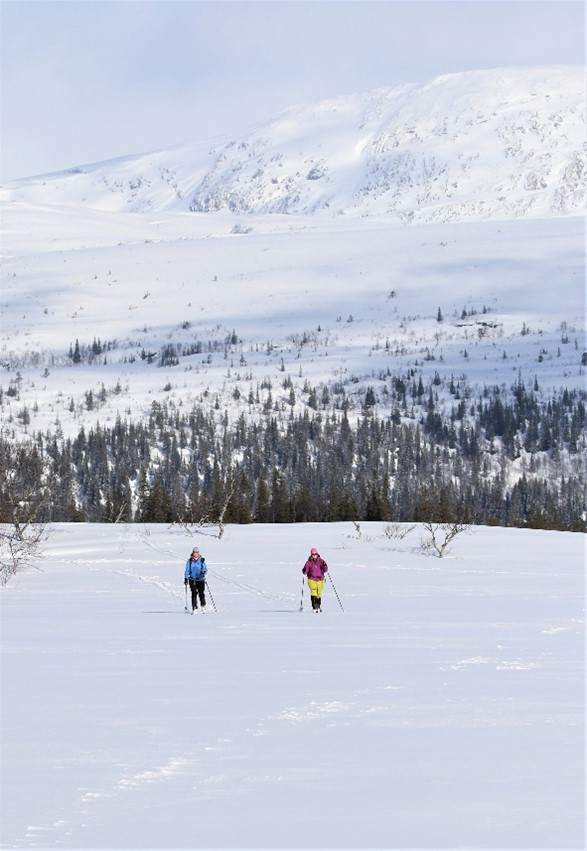
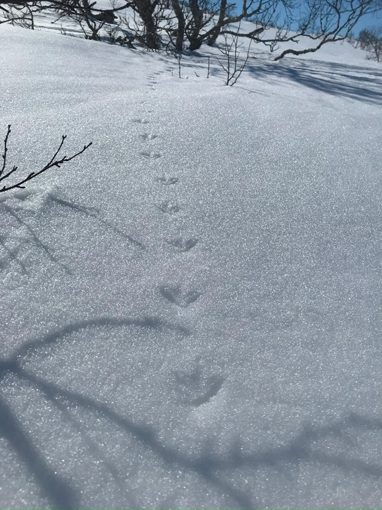
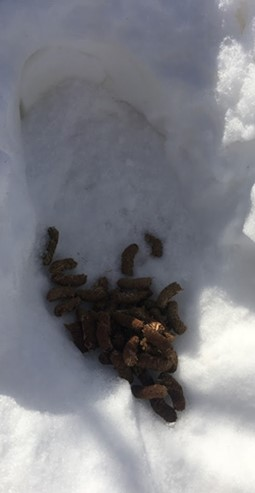
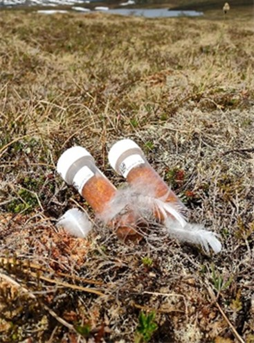
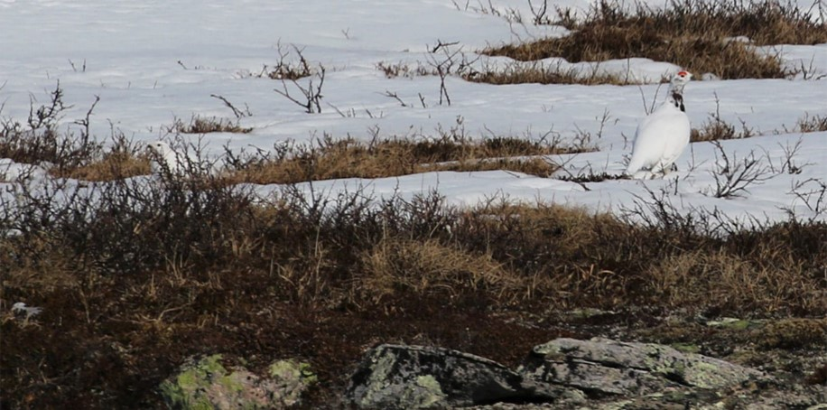
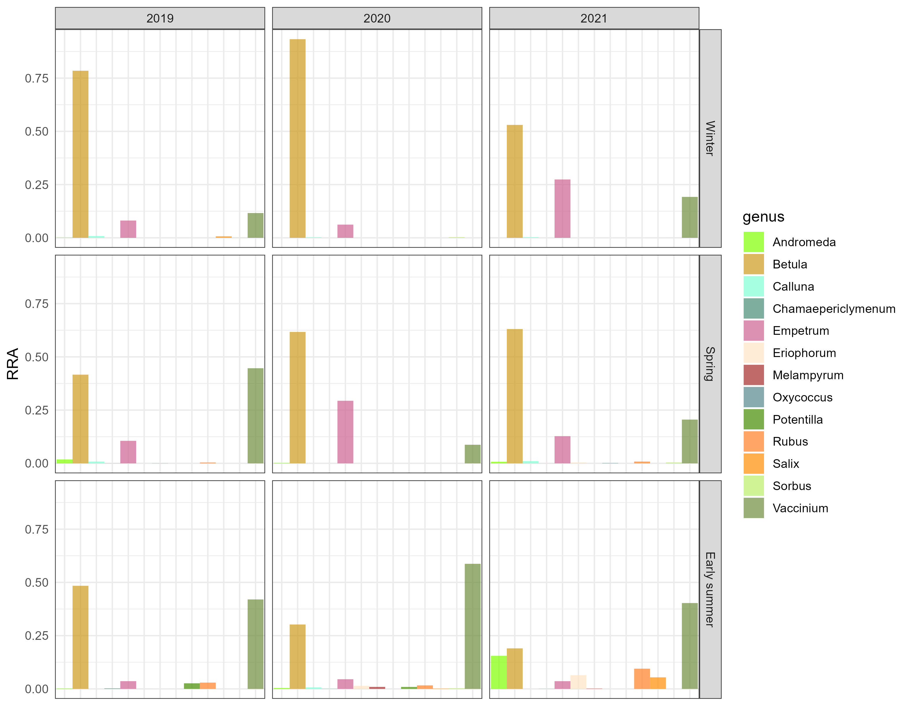
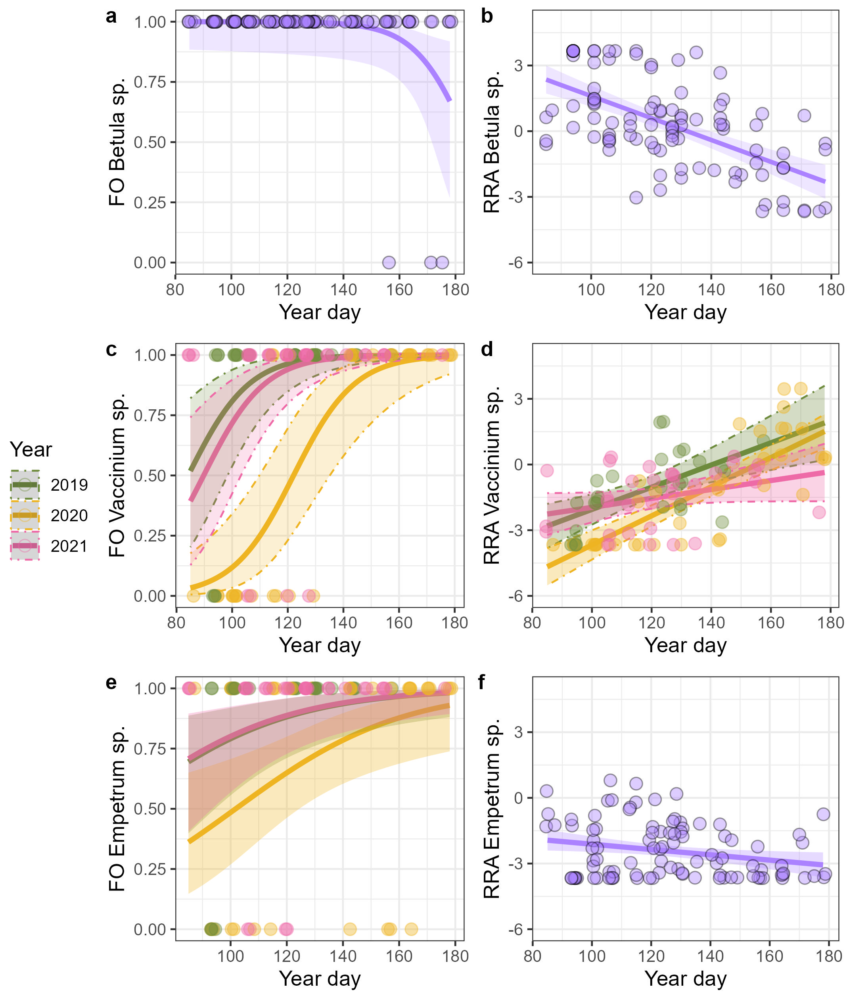

![]()
Fecal DNA metabarcoding reveals seasonal and annual variation in willow ptarmigan diet
Imagine living in an alpine environment with seasons changing between hot summer days with unlimited access to food to a landscape covered in snow where both low temperatures and blizzards cause most species to cloud the areas during winter. Here you find willow ptarmigan, one of few resident birds in our alpine ecosystems. To survive a harsh winter, evolution has made willow ptarmigan specially adapted, and the bird survives the winter on a very lean diet consisting of twigs and buds. While spring comes too full in the lowlands and offers access to fresh, nutritious plant material, the winter’s snow cover in willow ptarmigan habitats can last well into May/June. This in an important time for the ptarmigan, which must build up reserves for the breeding season. We know that early access to nutritious fresh vegetation affects the ptarmigan positively, they get in better condition and achieve better breeding success.


Fig 1. Left side: Field work at beautiful Lifjellet. Right side: Following the tracks, searching for scats.
Climate change affects alpine areas where willow ptarmigan has adapted over thousands of years, and an earlier spring and a longer growing season is expected. These changes set new premises for distribution and abundance of the alpine species, and it is difficult to predict how this will affect food web dynamics and trophic interactions in the ecosystems in near feature. It is important to gain information about these topics, to help us understand how climate change will affect vulnerable keystone species such as willow ptarmigan. Until now, we have known little about ptarmigan diet in the critical period between winter and summer, and how the diet is affected by changes in the arrival of spring and duration of snow cover.
To investigate this, in our study area at Lifjellet in Lierne municipality, we followed the tracks from willow ptarmigan from winter to spring for three consecutive years (2019, 2020, 2021) (Fig.1). Weekly from March to June, we visited our study area and collected fresh scats from willow ptarmigan (Fig. 2). With the help of microsatellite analyses, we obtained information about sex and species, and DNA metabarcoding analyses gave us new insight into willow ptarmigan diet. Further, satellite data provided us with information about both the arrival of spring (NDVI), and snow cover throughout the season (NDSI). With all this data available we were able to study the ptarmigan diet and how the arrival of spring affects the willow ptarmigan diet between years.



Fig 2. Upper left: Scats from willow ptarmigan. Upper right: Sampling scats.
We identified 18 important diet components and found that species from the functional groups trees and dwarf shrubs dominated the diet (Fig. 3). Within these groups three genera constituted the most important diet components: Betula, Vaccinium and Empetrum. Not surprisingly, willow ptarmigan forages on birch when snow cover is at its thickest. But the ptarmigan is selective and also manages to find more nutritious vegetation throughout the winter. Microhabitats as exposed ridges and vegetation below old spruce trees provide access to evergreen shrubs such as crowberry and blueberries.

Fig. 3. Stacked bar chart showing the proportions of reads assigned to taxonomic range genus from the fecal samples collected from willow ptarmigan (n=99).
In line with the arrival of spring, willow ptarmigan switches from a narrow winter diet to a spring diet with increasing elements of nutritious field vegetation as dwarf shrubs, graminoids and forbs. While birch constitutes a declining part of the diet throughout the spring, species such as blueberries has a marked increase over the course of the season (Fig 4).

Fig. 4. Estimated relationship (solid line) between FO and RRA of Betula (a; b), Vaccinium (c; d) and Empetrum (e; f) in samples and day of the year.
Spring is, as mentioned, an important time for the ptarmigan, where it must build up reserves for this year’s breeding. The ptarmigan diet (and breeding success!) varies across time, but we found the variation in diet to be better explained by date of the year than with our climatic variables snow cover (NDSI) and vegetation phenology (NDVI). So, although we have received some answers, new questions arise: Are there other variables than arrival of spring that affect willow ptarmigan diet between years? Could we be talking about a classic Bottom-up effect? That the quality/nutrient content of the different alpine plant species varies throughout the season and between years, and the ptarmigan forages on species that provide an optimal diet at all times? And perhaps it is the quality of the plant diet, together with its availability, that affects ptarmigan condition and breeding success? And how will both the abundance and quality of the various plant species be affected by the ongoing global warming? There is only one thing to do - continue the investigations!
We have continued our annual sampling from winter to spring at Lifjellet, and in 2023 the study was extended to include an additional coastal study area in Namdalseid municipality. We have also started sampling autumn scats, and we are in the process of planning surveys that will give us answers about abundance and quality of vegetation. So, stay tuned - more news about willow ptarmigan, diet and climate change are expected to come!
Full reference: Ingvaldsen, E.W., Østnes, J.E., Kleven, O., Davey, M., Fossøy, F. & Nilsen, E.B. (2024) Fecal DNA metabarcoding reveals seasonal and annual variation in willow ptarmigan diet. Royal Society Open Science, 11, 231518 (doi: https://doi.org/10.1098/rsos.231518)